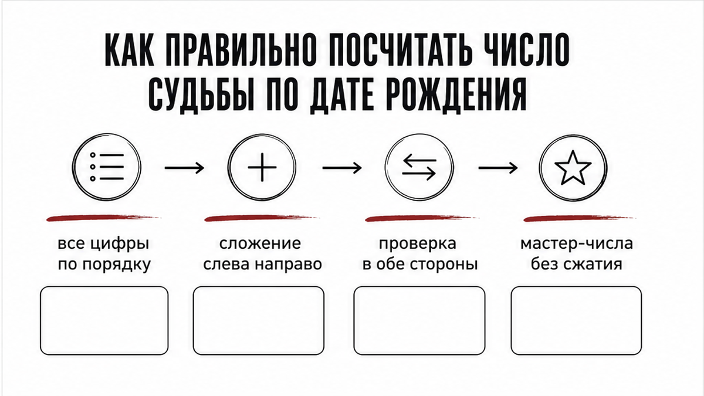
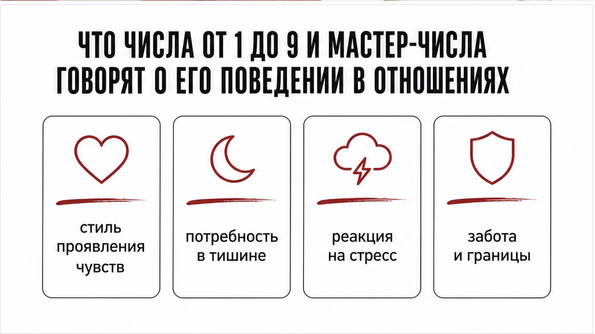
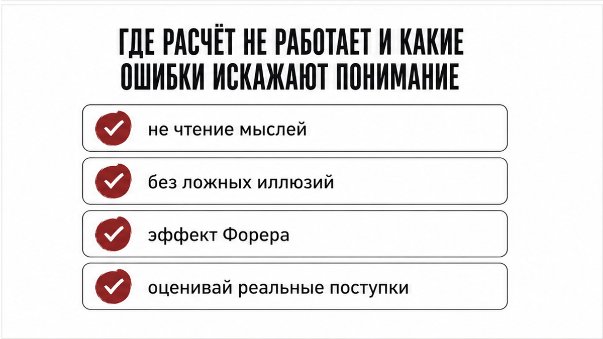

Воскресенье, четыре часа дня. Телефон лежит экраном вверх, на нём открыта старая заметка или его страница в социальной сети. Ты смотришь на день, месяц и четырёхзначный год его рождения. В голове крутятся вопросы: какой он на самом деле в близости, почему после тёплых дней внезапно уходит в тишину и что для него по-настоящему важно рядом с тобой. В руках только одна его дата, и самый простой способ понять его врождённый характер – посчитать число судьбы.
В популярной нумерологии это число называют числом жизненного пути. Оно показывает базовый ориентир личности: природный темперамент человека, его ключевые ценности и привычный стиль поведения в союзе. Чтобы расчёт получился точным, нужен один строгий алгоритм без смешивания разных методик.

Для вычислений нужна полная дата рождения мужчины: день, месяц и четырёхзначный год. Считать нужно строго по отдельным цифрам, последовательно складывая их между собой до получения однозначного числа от 1 до 9. Если в процессе финального сложения получается 11, 22 или 33, их оставляют как мастер-числа и не упрощают дальше.
Возьмём дату 08.04.1993.
Выписываем все цифры по порядку: 0, 8, 0, 4, 1, 9, 9, 3.
Складываем их слева направо:
0 + 8 = 8
8 + 0 = 8
8 + 4 = 12
12 + 1 = 13
13 + 9 = 22
22 + 9 = 31
31 + 3 = 34
Получилась промежуточная сумма 34. Теперь складываем цифры этого двузначного числа: 3 + 4 = 7.
Для надёжности проверим результат сложением в обратном порядке, от года к дню:
1 + 9 = 10
10 + 9 = 19
19 + 3 = 22
22 + 0 = 22
22 + 4 = 26
26 + 0 = 26
26 + 8 = 34
Снова получаем 34, а при сведении 3 + 4 выходит 7. Итоговое число судьбы для этой даты – 7.
Семёрка в отношениях ищет интеллектуальную глубину, смысл и спокойную тишину. Когда такой мужчина любит, его проявления точны и искренни, хотя он редко сыплет громкими признаниями. В моменты стресса или усталости он уходит в себя. Эту внутреннюю стену партнёрша нередко ошибочно принимает за охлаждение чувств. Это учебный портрет энергии числа, помогающий понять его склонности, а не окончательный диагноз живому человеку.

Каждая цифра задаёт определённый вектор проявления чувств и уязвимые точки в общении. Зная его число, легче понять мотивы его поступков в союзе:
Единица ориентирована на лидерство, независимость и взаимное уважение. Такой мужчина выражает любовь конкретными действиями и решениями. Если он сталкивается с попытками тотального контроля или критики, то закрывается и занимает позицию автономности.
Двойка нуждается в гармонии, чуткости и постоянном ощущении своей нужности. Он стремится к мягкому контакту, но рискует растворяться в партнёрше и испытывает сильную тревогу при отсутствии эмоционального отклика.
Тройка приносит в пару лёгкость, живую речь, романтику и игру. С ним интересно и тепло, однако при возникновении тяжёлых бытовых кризисов он может избегать серьёзных разговоров, переключаясь на шутки.
Четвёрка ценит стабильность, верность слову и долгосрочный горизонт планирования. Он надёжен и предсказуем, но бывает скуп на открытые эмоции, выстраивая семейную жизнь как строгий рабочий график.
Пятёрка живёт динамикой, впечатлениями и ощущением внутренней свободы. Он щедр на яркие эмоции, но при ощущении рутины или давления стремится увеличить дистанцию, воспринимая строгие рамки как угрозу.
Шестёрка нацелена на домашний уют, заботу и гармоничное семейное пространство. Он окружает вниманием, но склонен к гиперопеке и навязчивому контролю, считая, что действует исключительно ради общего блага.
Семёрка ищет интеллектуальную и душевную глубину. Ему жизненно необходимы периоды уединения для восстановления сил. Когда он перегружен, то уходит в глухую паузу, которую не стоит путать с потерей интереса к тебе.
Восьмёрка проявляет привязанность через статус, материальную защиту и решение масштабных задач. Опасность кроется в привычке оценивать отношения сухими результатами и подменять теплоту авторитарной опекой.
Девятка отличается широкой эмпатией и стремлением к идеальному союзу. Он способен глубоко сопереживать, но рискует отдавать слишком много ресурсов, после чего резко отдаляется из-за эмоционального выгорания.
Одиннадцать сочетает высокую интуицию, повышенную эмоциональную чувствительность и поиск духовного родства. В моменты непонимания склонен усложнять простые ситуации вместо прямого диалога.
Двадцать два нацелен на масштабные жизненные проекты и создание прочного союза на десятилетия. В погоне за глобальными целями он иногда забывает о повседневных проявлениях нежности.
Тридцать три ориентирован на глубокую поддержку и служение близким. Главная сложность такого характера заключается в риске раствориться в чужих проблемах и довести себя до морального истощения.
По стилю реагирования на стресс мужчины с числами 1, 5 и 7 чаще берут паузу и уходят в личное пространство. Обладатели чисел 2 и 6 стремятся сразу сблизиться и уладить напряжение. Люди с числами 3 и 9 могут колебаться между ярким сближением и внезапным отстранением.

Число судьбы отражает базовый потенциал и устойчивые черты личности, но оно не служит графиком судьбы или инструментом для чтения мыслей. Расчёт не покажет, напишет ли мужчина сегодня вечером и почему он замолчал в этот конкретный день. Число по дате остаётся неизменным на протяжении всей жизни, тогда как поведение человека меняется в зависимости от его текущего состояния, уровня зрелости и внешних обстоятельств.
Часто в вычислениях допускают типичные ошибки:
– Путают число судьбы по полной дате с числом дня рождения или расчётом по буквам имени, где действуют совершенно другие правила сведения.
– Складывают только день и месяц, отбрасывая год или используя только две последние цифры года.
– Складывают блоки чисел целиком, а не отдельные цифры, что часто приводит к неверному итогу.
– Пользуются случайными онлайн-калькуляторами, которые автоматически обрезают мастер-числа 11, 22 и 33 до простых четвёрок или двоек.
Важно помнить и о психологическом эффекте Форера, открытом в 1948 году психологом Бертрамом Форером. В ходе эксперимента участники оценили точность общего психологического описания в среднем на 4,3 балла из 5, искренне веря, что текст составлен индивидуально под каждого из них. Описание по числу судьбы служит удобной гипотезой для осмысления характера, но не заменяет наблюдения за реальными поступками мужчины.
Чтобы использовать полученную информацию без лишних иллюзий, придерживайся простого алгоритма:
1. Пересчитай сумму цифр дважды – слева направо и справа налево, чтобы убедиться в правильности математического итога.
2. Сопоставь 2–3 ключевых пункта описания с тем, как мужчина уже вёл себя в реальных жизненных ситуациях, а не с предположениями о его тайных мотивах.
3. Не требуй от даты рождения ответов на вопросы о сегодняшнем настроении или сиюминутной паузе в переписке.
4. Если в ваших отношениях возникла запутанная ситуация и тебе нужно увидеть истинные причины его поведения прямо сейчас, переходи от общих расчётов характера к детальному разбору происходящего.
Задать волнующий вопрос о текущем состоянии отношений можно с помощью карт. Ты можешь получить 3 бесплатных расклада на 3 любых вопроса, отправив запрос голосом или текстом. Выбирай подходящий формат: быстрый триплет на 3 карты или глубокий кельтский крест на 10 карт – открывай бот в Макс.
Для детального анализа скрытых мотивов, страхов партнёра и перспектив союза подойдёт структурированный аудиоразбор «Суть – Тень – Вектор». Формат включает подробный разбор ситуации, дополнительную карту практического совета и ответы на твои уточняющие вопросы: запускай приложение во ВКонтакте или заходи в приложение Макс.